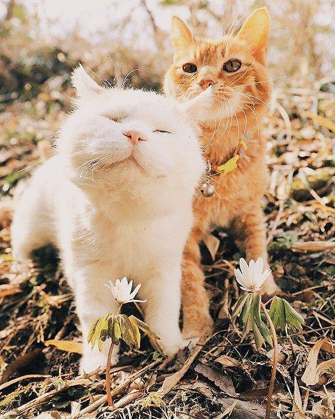
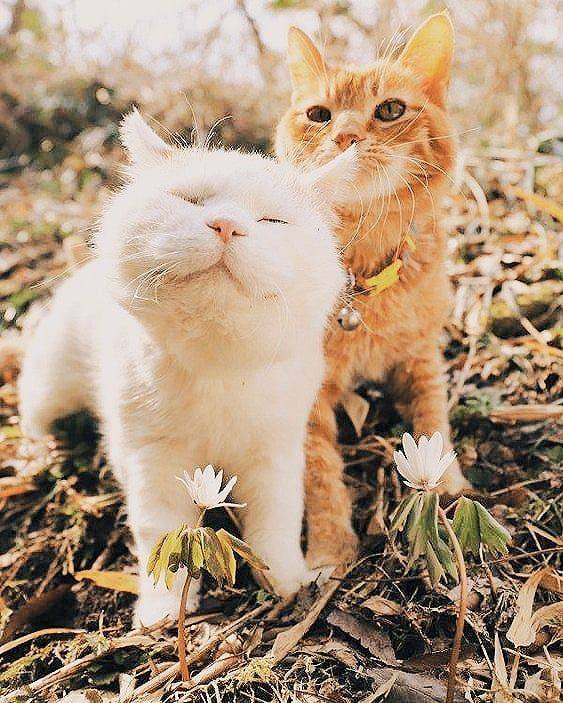

О нас
Добро пожаловать в приют для животных «Каспер»! Мы являемся коммерческой организацией, посвятившая свою деятельность помощи бездомным животным. Наша цель - найти каждому питомцу любящий и заботливый дом, где он сможет наслаждаться счастливой и безопасной жизнью. В наш приют мы принимаем животных, которые оказались в трудной ситуации, будь то бездомные собаки, кошки. Мы стремимся предоставить им полный уход, включая медицинскую помощь, вакцинацию, качественное питание. Наша команда состоит из опытных ветеринаров, волонтеров и сотрудников, которые посвятили свою жизнь помощи животным.
 



Мы верим, что каждое животное заслуживает любовь, заботу и уважение. Каспер оказывает не только физическую помощь, но и старается найти для питомцев добрые и ответственные семьи. В приюте мы проводим тренировки и социализацию животных, чтобы они были готовы стать прекрасными спутниками в новом доме. Мы также осуществляем программу усыновления, в рамках которой помогаем животным найти постоянные дома.
ПодробнееМероприятия
Приют постоянно организует различные мероприятия, чтобы обеспечить нашим питомцам интересную и разнообразную жизнь, а также привлечь внимание потенциальных владельцев. Вот некоторые из наших регулярных мероприятий:
- День открытых дверей
Раз в месяц мы приглашаем всех желающих познакомиться с нашей командой и питомцами. Вы сможете поиграть с животными, задать все интересующие вопросы, и узнать больше о нашей работе. Также вы можете поддержать работу приюта, пожертвовать в наш фонд. Пожертвования могут быть в виде корма, игрушек и другие необходимые предметы, для наших питомцев.
- Адаптационные дни
Регулярно мы устраиваем специальные дни, когда максимально сильно стараемся найти дом для наших подопечных. В эти дни мы организуем мероприятия с участием наших питомцев, чтобы показать их личность и уникальные особенности потенциальным владельцам. Это отличная возможность задать все вопросы, познакомиться с животными и, возможно, найти своего нового друга.
- Обучающие семинары
Каспер регулярно проводит семинары для хозяев, чтобы помочь им научиться правильно ухаживать за своими питомцами. Эти семинары включают такие темы, как основы ухода за животными, тренировки, правильное питание и многое другое. Мы приглашаем экспертов и специалистов из различных областей зоологии и ветеринарии, чтобы поделиться своими знаниями и опытом с нашими участниками.
- Благотворительные дни
Наша команда организует благотворительные акции, чтобы помочь собрать средства для поддержки работы приюта.Мы проводим ярмарки, аукционы, забеги собак и другие мероприятия, на которых все собранные средства будут направлены на медицинские услуги, кормление. Наш приют всегда открыт для посещений, приглашаем вас присоединиться к нашей деятельности!
Статистика
Мы гордимся тем, что предоставляем безопасное и наполненное заботой пространство для бездомных животных. Вот некоторые цифры, которые отражают нашу работу и влияние, которое мы оказываем:
| 2020 г | 2021 г | 2022 г | |
|---|---|---|---|
| Кол-во принятых питомцев | 350 | 430 | 393 |
| Кол-во успешно усыновленных питомцев | 310 | 380 | 365 |
| Кол-во питомцев, переведенных в другие организации | 25 | 15 | 22 |
Мы стремимся не только помочь найти дом для каждого питомца, но и предоставить им максимально комфортные условия в приюте. Вот некоторые данные о нашей инфраструктуре:
- Площадь приюта: 500 квадратных метров;
- Количество вольеров для собак: 30;
- Количество вольеров для кошек: 20;
- Ветеринарный кабинет: оснащен современным оборудованием для медицинских процедур.